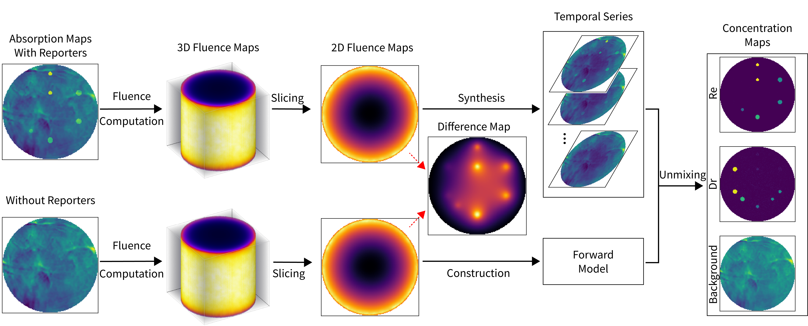
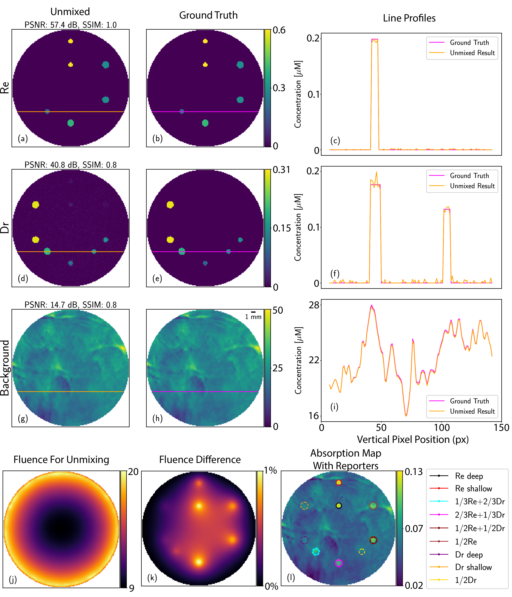
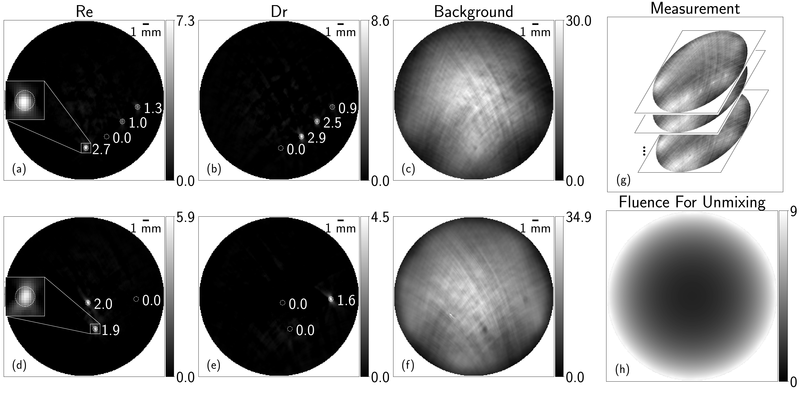

Results¶
Quantitative Unmixing Results¶
We first validate our framework on a numerical phantom that is represented by a cylinder of diameter and height 27 mm. Workflow of the simulation pipeline is illustrated in Fig. 25.

Fig. 25 Workflow of the simulation pipeline. Absorption maps are 2D cross-sectional images of original 3D maps.¶
The background medium has uniform scattering (\(\mu^{'}_s=10 \text{ cm}^{-1}\)) and a heterogeneous absorption map \(\mu_a(\mathbf{r})\) with maximal value \(0.12 \text{ cm}^{-1}\), synthesized from the last OFF-switching frame of the experimental mouse dataset (normalized to \([0, 1]\) and scaled to \([0, 0.12]\)). We use a concentration of 0.6 \(\mu\)M of Re and 0.3 \(\mu\)M of Dr. Then, we place nine tubes of two different radii in the background medium, with three tubes containing a mixture of Re and Dr according to different ratios, see Fig. 26 (k) and (l) for details.

Fig. 26 Unmixing results of the numerical phantom. (a), (d), (g): Unmixed quantitative concentration maps (in \(\mu\)M) for Re, Dr, and the background, respectively. (b), (e), (h): Ground truth. Concentration maps of the unmixed and ground truth share the same scale (colorbar) for each reporter and the background. (c), (f), (i): Intensity profiles along a horizontal line across the concentration map (see for example (a) and (b)). (j) Fluence map (in arbitrary units) used for the unmixing algorithm. (k) Difference map of the fluence distribution with and without the contribution of photo-switching reporters, in percentage. (l) Absorption map (in \(\text{cm}^{-1}\)) with reporters. Solid and dashed circles represent the periphery of the Re and Dr species, respectively. Ratios of the mixture of Re and Dr in each tube are indicated in the caption.¶
We first compute the 3D fluence distribution via the diffusion equation. Then, we synthesize time series of PA images following Eq. (44). Additive white Gaussian noise of strength of 0.1% of the maximum of the PA signal over the entire switching cycle is applied to the measurements. To construct the forward model of unmixing, an estimation of the fluence distribution is required. As we assume no prior knowledge of the reporters to be imaged, we compute fluence using only the absorption map of the background. We show in Fig. 26 (j) the fluence maps with the sole contribution of the background and additionally of the reporters in percentage. The mismatch of these two maps is negligible (maximally 1%) and thus will have little impact on the forward model and the unmixing quality. We then perform unmixing by solving the optimization problem defined in Eq. (45).
We show in Fig. 26 that quantitative concentration maps of both the reporters and the background are faithfully reconstructed.
Experimental Results With Fluence Estimation¶
We then validate our framework on tissue-mimicking blood phantoms. The workflow to estimate the fluence distribution and construct the forward model for unmixing is similar to the simulation pipeline described in Fig. 25, except that we assume a homogeneous absorption map of constant value \(0.21 \text{ cm}^{-1}\) estimated based on the composition of phantoms (see Optical Parameters in the Appendix fo details). We show the fluence map and a series of PA measurements used for unmixing in Fig. 27 (g) and (h).

Fig. 27 Unmixing results of tissue-mimicking phantoms. (a)-(c) Intensity maps of Re, Dr, and the background for the phantom with four tubes. (d)-(f) Intensity maps of Re, Dr, and the background for the phantom with three tubes. The ROI of each target is indicated by a dashed circle of radius 4 pixels. A close-up image of the ROI is provided for a Re target in (a) and (d). (g) Stack of three example images (first, second, and last frames) of PA measurements of the phantom with four tubes. (h) Fluence map used for the unmixing of both phantoms. All values are in arbitrary units.¶
For quantitative analysis, we define the intensity of a target as the sum of intensities inside a circular region-of-interest (ROI) of radius 4 pixels around the brightest pixel inside the target divided by the number of pixels in the ROI. We indicate the ROI with dotted circles and annotate intensity of a target next to it in Fig. 27 (a), (b), (d), and (e). We show that unmixing of Re and Dr is successful for the phantom with three tubes in Fig. 27 (d) and (e). Further, the ratio between the two tubes of Re that contain an equal amount of it is 2:1.9, which is very close to the true ratio of 1:1. The result on the phantom that contains mixtures of Re and Dr shows a successful separation of these two species in all four tubes in Fig. 27 (a) and (b). The ratio between the three tubes is 2.7:1.0:1.3 for Re and 2.9:2.5:0.9 for Dr, while the reference values are 3:1:2 and 3:2:1. The mismatch between the recovered and reference ratios arises from the imperfect illumination and heterogeneity of absorption within the phantom.
Experimental Results With Three Species of Reporters¶
We finally evaluate our approach on a phantom of beads and on a mouse model with three types of reporters. The experimental phantom datasets contain 2D PA images of size (\(300\times300\)) px of 50 OFF-switching pulses averaged over 50 OFF-switching cycles to reduce detection noise. Further, only the first 25 pulses of the experimental phantom datasets are used for unmixing as dynamics are dominated by noise fluctuations afterward (see Fig. 38 (b) in the Appendix). The mouse dataset of 25 OFF-switching pulses averaged over 50 cycles contains 2D PA images that are cropped from (\(332\times332\)) px down to (\(120\times90\)) px to minimize the area devoid of switching information and thus reduce computational time.
To build the forward matrix \(\mathbf{S}\) for the experimental dataset, knowledge of the distribution of the light fluence and intrinsic kinetic constants \(k_p\) is required. We adopt a constant fluence distribution over space and time because of the tiny contribution of the reporter proteins compared to the tissue background and the shallow implantation of the proteins. More details on the determination of the kinetic constants are presented in Estimation of Kinetic Constants in the Appendix.

Fig. 28 Unmixing results of a phantom of beads and mouse model. First two rows (a)-(h): reconstructed concentration maps of rsOAPs Re ((a) and (e)), Dr ((b) and (f)), and Rp ((c) and (g)) using the proposed combination of TV and \(\ell_1\) regularization. (d) and (h): background. Color images (i)-(l) visualize maps of the three reconstructed rsOAPs overlaid on the background (produced using Fiji [166]). Re, Dr and Rp are represented by blue, red, and green channels. Background is grayscale. Color images (i) and (k) represent reconstruction result without any regularization; (j) and (l) represent the result with our proposed regularization method. Arrows in (i) point out some of the beads belonging to the species Rp that were unsuccessfully unmixed under unregularized reconstruction compared to the successful outcome with regularization in (j). We provide a zoom-in of the details of the unmixing results of Rp in (k) and (l) to ease the comparison of the unregularized and regularized methods. Intensities of all the images are normalized to [0, 1] for cross-comparison and color visualization.¶
Results in Fig. 28 (a)-(h) show that our unmixing algorithm successfully reconstructs the continuous spatial distribution of the three rsOAPs for both the bead phantom and the mouse model. Overlay images of Fig. 28 allow us to compare results of our proposed approach (Fig. 28 (j) and (l)) against those of unregularized approach (Fig. 28 (i) and (k)). We observe that, without any regularization, some beads belonging to the Rp channel show up in the Dr channel, for instance those pointed out by the arrows in Fig. 28 (i) and (j). The effect of regularization is even more obvious when we zoom in onto the Rp species in the reconstruction result of mouse images in Fig. 28 (k) and (l). In the absence of regularization, the Rp reporter cannot be properly unmixed from the other two, as indicated by the zoom-in region in Fig. 28 (k). With our proposed regularization, the same region is cleanly unmixed with coherent intensity distribution, as observed in Fig. 28 (l). We provide additional simulation results using these three species to demonstrate effectiveness of our proposed regularization method in section Effectiveness of Regularization in the Appendix.
The code and data to produce the results are available online [167].